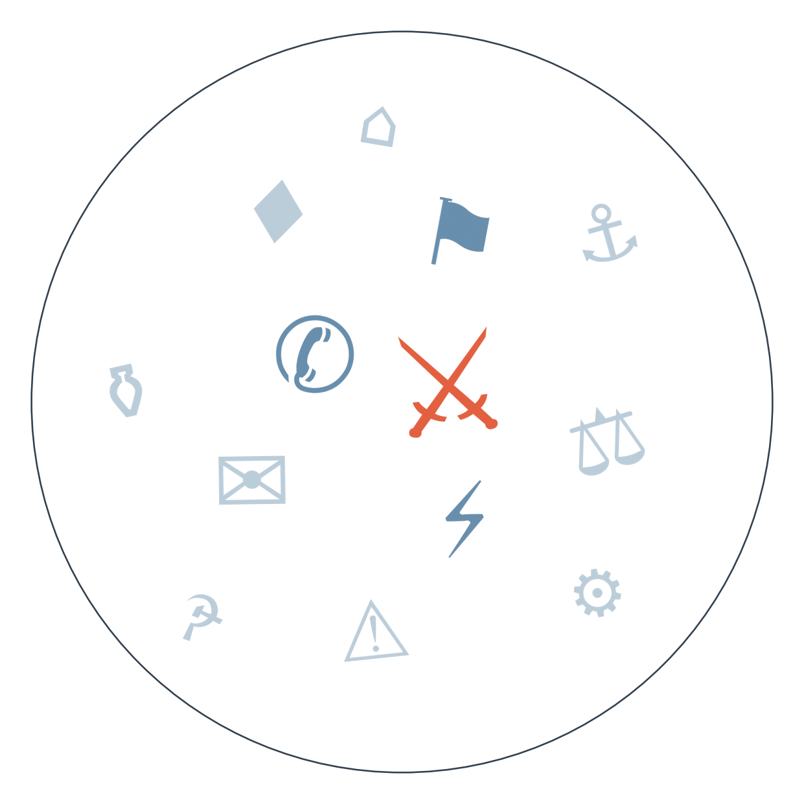

Ранковий бріф · огляд світової преси
Міноборони РФ офіційно оголосило підготовку "масованих ударів" по енергетиці України — а тим часом кількість постраждалих від детонації боєприпасів у Мила під Києвом зросла до 52, здебільшого це літні мешканці пансіонату (за українськими офіційними даними загиблих лишається 38). Це означає, що напередодні опалювального сезону Київ готується до нової хвилі атак на мережі, а Берлін наближається до дедлайну 5 вересня, коли Мерц обіцяв назвати винних за дрон над Лейпцигом і оголосити санкції.
Тим часом остаточний підрахунок в Ісландії підтвердив: 52,8% проти 47,2% — переговори з ЄС не відновляться, і сільські округи знову переважили Рейк'явік. Прем'єрка Фрідсдоттір визнала, що найближчим часом нічого не зміниться, і це закриває піврічну інтригу навколо вступу острова в союз, залишаючи Брюссель без символічної перемоги над євроскептицизмом.
А ще вночі американські війська вперше за кілька тижнів завдали удару по цілях в Ірані — дві пускові установки КВІРІ на острові Ларак у Ормузькій протоці, за словами анонімного джерела, наведеного Axios. КВІРІ вже пообіцяли відповідь, і це піднімає ставки саме тоді, коли танкери в протоці й так під загрозою нового обстрілу (поки що це є тільки в Axios, з посиланням на джерела; інші редакції переказують саме його).

Удар США по островах в Ормузькій протоці
🇮🇷 Iran International (опозиційне видання у вигнанні): подає новину стримано-нейтрально, наводячи паралельно повідомлення Al Jazeera й Reuters про удар по двох пускових установках КВІРІ на острові Ларак, і одразу цитує погрозу КВІРІ про відповідь — рамка "нова стадія протистояння", без героїзації жодної зі сторін.
Замовчують: жодне з процитованих джерел не наводить офіційного підтвердження Пентагону чи Білого дому — вся картина побудована на анонімному джерелі Axios і на іранських медіа.
Чому розходяться: іранські видання, навіть опозиційні у вигнанні, зацікавлені показати послідовність ескалації без героїчного тону, бо їхня аудиторія і так критично налаштована до влади; ізраїльська преса традиційно підтримує жорстку лінію США проти Ірану й тому одразу дає виправдувальну рамку "самооборона"; норвезьке видання, не маючи власних джерел у регіоні, ретранслює іранську версію, бо вона єдина дає деталі про жертви; австралійська публічна мовна компанія, географічно й політично віддалена від конфлікту, обмежується мінімальною фіксацією, не бажаючи брати на себе відповідальність за неперевірене.
Ісландія програла референдум, Європа шукає, як це подати
Замовчують: жодне з чотирьох джерел не підіймає питання явки лише 9,5% — наскільки взагалі легітимний мандат дало це голосування, лишається поза кадром.
Чому розходяться: бельгійська газета, як і решта проєвропейської преси, зацікавлена применшити символічний удар по розширенню Союзу; Politico Europe працює на брюссельську аудиторію чиновників, для яких важливий юридичний наступний крок, а не емоційна оцінка; канадське видання дивиться на подію через призму власного євроскептичного досвіду й глобального тренду; гонконгська газета традиційно вписує будь-яку європейську подію в ширшу рамку суперництва великих держав.
серпень дрон невідомого походження над Лейпцигом підштовхує Мерца пообіцяти звинувачення й санкції до 5 вересня. Паралельно, як окрема лінія ескалації, а не наслідок: 29-30 серпня удар по складу боєприпасів у Мила під Києвом стає найсмертоноснішим за рік → 30 серпня Міноборони РФ офіційно оголошує підготовку "масованих ударів" по енергетиці України → веде до перевірки того, чи стане атака на Лейпциг приводом для санкцій ЄС раніше, ніж Росія встигне завдати нового удару по мережах.
кінець серпня Трамп оголошує нафтову угоду з Венесуелою на 65 млрд барелів, а Родрігес захищає її як джерело "нескінченних вигод" → 30 серпня Трамп заявляє про намір заповнити стратегічний резерв нафтою саме з Венесуели → веде до зростання тиску розкрити, хто саме є оператором-партнером видобутку, бо без цієї деталі угода лишається "протекторатом" в очах бельгійської преси й предметом скепсису аналітиків щодо реальних обсягів.
кінець серпня, Jackson Hole голова Fed Уорш натякає на можливе підвищення ставки, а Бессент попереджає про ризики розпродажу японських активів на тлі держборгу США в 40 трлн доларів → веде до зростання напруги на ринку облігацій напередодні засідання FOMC 12 вересня, коли стане зрозуміло, чи підтвердяться ці натяки рішенням.
Напередодні засідання Fed 12 вересня ринки закладають ризик підвищення ставки — деталі вже розібрані в ланцюгу вище.
Аргентина: з вересня зростають тарифи на громадський транспорт у Буенос-Айресі, тоді як мінімальна зарплата, за розрахунками уряду, наздожене інфляцію лише до квітня 2027-го.
ЄС готує додаткові вимоги до Meta понад літню торговельну угоду США-ЄС щодо мит; рішення очікується 11 вересня.
За лаштунками угоди Meta на 17 млрд доларів зі штатами США щодо безпеки дітей у соцмережах — юридичний директор компанії домовлявся особисто за шість днів до початку федерального суду в Теннессі (за O Globo).
Bild тим часом розганяє "яхту-вогняне пекло" в Адріатиці й скандал у роздягальні друголігового клубу, тоді як про перше офіційне визнання Росією участі в придушенні заколоту в Нігері серед німецьких заголовків — тиша.
Daily Mail ставить катастрофу порома біля Кіпру в один ряд із розслідуванням про сусідів Меган і Гаррі в Монтесіто — трагедія й світська хроніка йдуть однією стрічкою.
Індійський Times Now змішує удар США по Ірану в Ормузькій протоці з позовом акторки й відкликанням рису в США — геополітика розчиняється між розважальними новинами.
Готовність РФ до "масованих ударів" по енергетиці означає, що Україна цієї осені знову йде в опалювальний сезон під загрозою масштабних відключень — "Нова пошта" вже перебудовує логістику, розподіляючи посилки між відділеннями замість великих сортувальних центрів через ризик ударів.
На Волині перепоховали останки 55 поляків, убитих під час Волинської трагедії — символічний крок, який може пом'якшити один із найчутливіших пунктів у польсько-українських відносинах напередодні складних розмов про вступ України в ЄС.
Кремль заявив, що саміт для завершення війни в Україні можливий лише "для фіксації" вже досягнутого результату, а не для нових перемовин — тобто Москва поки не бачить у переговорах простору для реальних поступок, і Україна залишається перед перспективою продовження бойових дій без чіткого дипломатичного виходу.
Тибетська сторона гімалайської повені лишається практично невидимою: китайські видання детально описують ситуацію на своєму боці кордону, тоді як про масштаб на тибетській території відомо лише з переказів обмежених кадрів. Мовчить фактично китайська сторона офіційно — доступ журналістів туди обмежений, а тема Тибету залишається політично чутливою навіть у контексті стихійного лиха.
Про офіційне визнання Росією ролі "Африканського корпусу" в придушенні заколоту в Нігері західна преса (France 24, BBC) згадує в перших абзацах, а африканські видання переказують лише факт відновлення контролю над аеродромом, не називаючи Росію взагалі. Мовчать саме африканські редакції — імовірно, тема надто делікатна для внутрішньої аудиторії, яка звикла бачити хунту самостійним гравцем, а не клієнтом іноземної приватної армії.
Оператор-партнер видобутку нафти у венесуельській угоді досі не має імені — жодне джерело в сьогоднішньому дайджесті, включно зі скептичним ABC News, не називає конкретну компанію. Мовчать обидві сторони одночасно: Вашингтону вигідно уникнути звинувачень у корупційному розподілі контрактів, а Каракасу — уникнути звинувачень у розпродажу останнього суверенного активу країни.
Едуар Філіп заснував нову партію й заявив про президентські амбіції, а соціаліст Олів'є Фор того ж дня вступив у президентську гонку — ознака, що виборча кампанія 2027 у Франції стартує на півтора роки раніше офіційного циклу. На чому ґрунтується: два незалежних повідомлення (De Standaard, Euractiv).
Одразу після удару США по Ларак повідомили про новий обстріл танкера в Ормузькій протоці — ознака переходу від одиничних інцидентів до систематичного тиску на судноплавство. На чому ґрунтується: два джерела (De Telegraaf, Al Arabiya).
Шведська колумністка Dagens Nyheter першою пов'язала поразку ісландського референдуму з посиленням позицій Трампа щодо Гренландії — поки одноджерельна гіпотеза, варта відстеження. На чому ґрунтується: одна колонка.
Рахунок: 1 з 2 (базово 1 з 2) — прогноз про відновлення переговорів Ісландії з ЄС не справдився (реальність: рішуче "ні" 52,8%); прогноз про присягу Хокона VIII як короля Норвегії 1 вересня свій термін ще не настав, тож поки не рахуємо.
Наші:
Росія завдасть удару по Україні із застосуванням 500+ дронів до 07.09.2026 Якщо справдиться — це підтвердить, що заява Міноборони РФ була не риторикою, а конкретною підготовкою, і Україна зустріне вересень новою хвилею масованих атак
США оголосять санкції проти банку третьої країни за співпрацю з Іраном до 13.09.2026 Це означатиме перехід від одноразового удару по Ормузькій протоці до системного тиску на іранську мережу обходу санкцій
Хунта Нігеру або Кремль оприлюднять конкретну чисельність чи деталі участі "Африканського корпусу" в придушенні заколоту до 12.09.2026 Це буде рідкісний випадок публічної деталізації російської найманської присутності в Африці
Кажуть інші:
Аналітики (Kommersant) очікують падіння експорту пшениці з РФ у вересні до мінімуму з 2010 року, горизонт вересень 2026.
ABC News сумнівається, що угода США-Венесуела призведе до швидкого й масштабного нарощування видобутку нафти, горизонт не вказано.
Заступник міністра закордонних справ Ірану (за Al Arabiya) каже, що Ормузька протока не запрацює в повному режимі, поки США не виконають взятих зобов'язань, горизонт не вказано.
Базова лінія у прогнозах. Відсоток «базово» — це ймовірність події за інерцією, якщо ніхто нічого не робитиме й нічого не зміниться. Друге число — наша впевненість. Прогноз має сенс лише тоді, коли ці числа розходяться: збіг означає, що ми просто описали поточний стан.
Відсотки в карті уваги. Частка країни в денному обсязі зібраних матеріалів. Не показник важливості події, а показник того, скільки місця країна зайняла в новинному потоці за добу. Різкий стрибок частки зазвичай означає, що в країні щось відбувається.